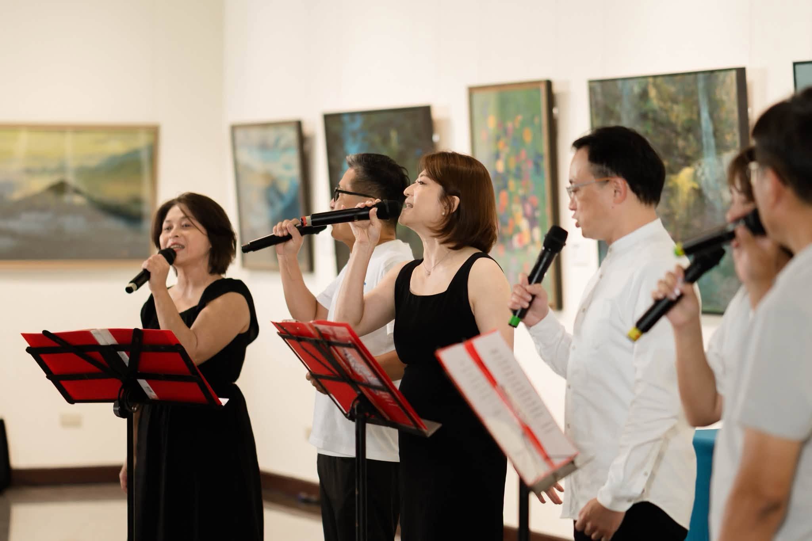

開幕隔天，歌聲還留在展場裡

開幕典禮排定的節目結束後，展場並沒有立刻安靜下來。走進二展廳，還能看見當天演出的畫面——幾位表演者拿著麥克風，站在油畫前唱著歌，歌詞和展覽的主題呼應著：每個孩子都值得被好好對待。
這場演出不是重點的裝飾，而是整個開幕儀式想傳達的心意之一：藝術可以是很多種形式，唱一首歌、畫一幅畫，說的都是同一件事——我們願意花時間，去理解一個人的感受。
展覽還在展出，這份心意也還在。
展場裡的幾個片刻——有人結伴而來，有人特地再訪，記下這段展期留下的溫度。

展覽開幕之後，中正紀念堂的展場持續有人潮進出。有人是專程來看畫的，有人是路過被吸引進來的，也有人特地帶著家人朋友再走一趟。以下幾張照片，記下這段展期裡的幾個片刻。

開幕典禮排定的節目結束後，展場並沒有立刻安靜下來。走進二展廳，還能看見當天演出的畫面——幾位表演者拿著麥克風，站在油畫前唱著歌，歌詞和展覽的主題呼應著：每個孩子都值得被好好對待。
這場演出不是重點的裝飾，而是整個開幕儀式想傳達的心意之一：藝術可以是很多種形式，唱一首歌、畫一幅畫，說的都是同一件事——我們願意花時間，去理解一個人的感受。
展覽還在展出，這份心意也還在。
這天展場來了一群朋友，看完展後在牆邊的畫作前排排站好，比出勝利手勢拍了張大合照。這樣的畫面在展期裡並不少見——比起一個人靜靜看展，很多人是結伴而來的。
一群人一起看展，看到的東西常常不太一樣。有人被某幅風景吸引，停下來多看兩眼；有人先走完一圈，回頭再拉朋友去看剛剛錯過的角落。展覽結束後，這些片刻多半會變成聊天時的一句話：「你記得那幅畫嗎？」
協會也相信類似的道理：陪伴孩子這件事，同樣需要很多人一起做，不是單靠一個人就能撐起來的。

展場裡常常可以聽到這樣的對話：「這幅畫是不是莫內的風格？」「你看這片荷花池的顏色，好像會動。」這天有三位參觀者站在一幅荷花池作品前，一邊看一邊聊，聊完才想起要拍張照片留念。
一幅畫能讓陌生人多聊上幾句，靠的不是什麼特別的技巧，而是它給了大家一個共同的話題、一段可以停下來的時間。
孩子需要的陪伴，某種程度上也是類似的東西：一個不趕時間的大人，願意站在他身邊，聽他說說今天發生了什麼。

展場中間擺了幾張長椅，原本是給看展看累了的人休息用的。這天有三位參觀者索性坐了下來，比著手勢拍照，看起來心情不錯。
看展其實不需要一路站著走完全程。停下來坐一會兒，回頭再看看剛剛經過的作品，常常會注意到第一次沒發現的細節。
我們也希望孩子在成長路上，能有這樣「可以坐下來」的時刻——不必時時刻刻往前衝，累了、卡住了，身邊要有人願意陪他停一下。

這張照片拍到的，是開幕當天演出裡的另一個角度——六位表演者一字排開，身後正好是「萬人簽名・守護孩子的未來」的主視覺看板，上面貼滿了來賓寫下的祝福小卡。
歌聲和牆上的字條，其實在說同一件事。有人用唱的，有人用寫的，說的都是同一份心意：希望每個孩子都能被好好對待、好好長大。
這面牆到展期結束前都留在原地，歡迎還沒來過的朋友，也留下自己的一句話。

不少人看完展覽，會特地走到「萬人簽名・守護孩子的未來」這面主視覺前拍張照。這天有四位朋友站在看板前比讚，背景還能看到牆上密密麻麻的手寫祝福。
那面牆上沒有一句話是重複的——有人寫「加油」，有人寫一整段祝福，也有人只留了自己的名字。每一句都是不同的人，在那個當下願意花時間留下的一點心意。
協會很珍惜這樣的畫面。畢竟守護孩子這件事，從來都不是靠一句口號，而是靠很多人願意一起放在心上。

這張照片裡，一對年長的夫婦手挽著手，站在一幅畫著漁港夕陽的作品前。畫裡的光還沒完全落下，兩人的表情很放鬆，像是走了一段路後剛好停在這裡休息。
展場裡這樣的畫面其實很多——不只是年輕人結伴而來，也有不少長輩專程過來看展，順道走走、聊聊天。藝術從來不挑年紀，願意停下來看的人，都能在畫裡找到屬於自己的一段記憶。
展覽只剩下最後兩週。如果你身邊也有一位想一起走走的人，這會是個不錯的理由。